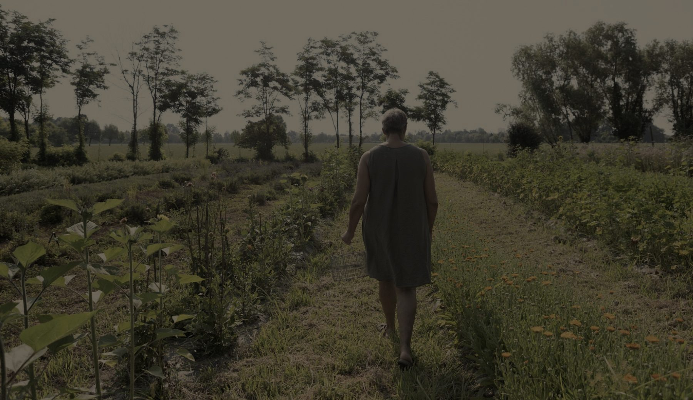
erboristeria contadina
Bolzano Vicentino · dal 2006
Semino, colgo, essicco, miscelo.
Quattro ettari di terra, biologici da vent'anni. Ci cresce quello che finisce nelle nostre tisane: calendula, malva, lavanda, iperico, melissa. E accanto, l'orto di stagione, le api e il campo dei fiori da taglio.
Non è un'erboristeria che compra e rivende. Seminiamo, raccogliamo a mano nel momento giusto della giornata, essicchiamo lentamente sui telai e misceliamo una ricetta alla volta. Poi apriamo la bottega e ve la diamo in mano, raccontandovi da quale filare arriva.
Guarda l'erbario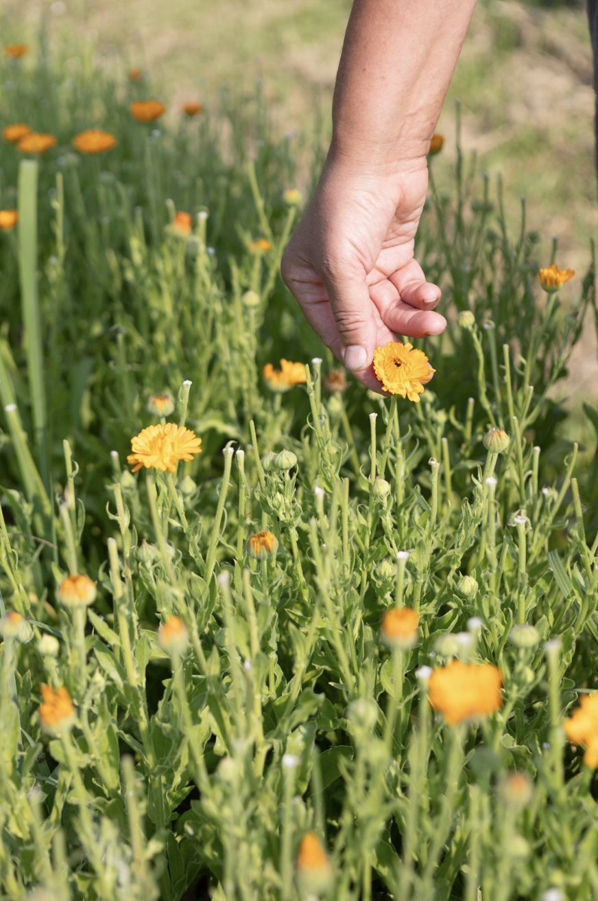
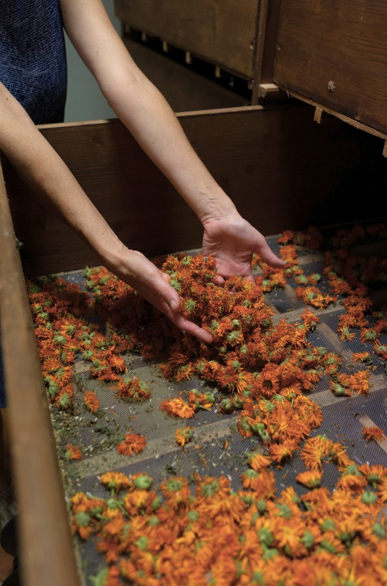
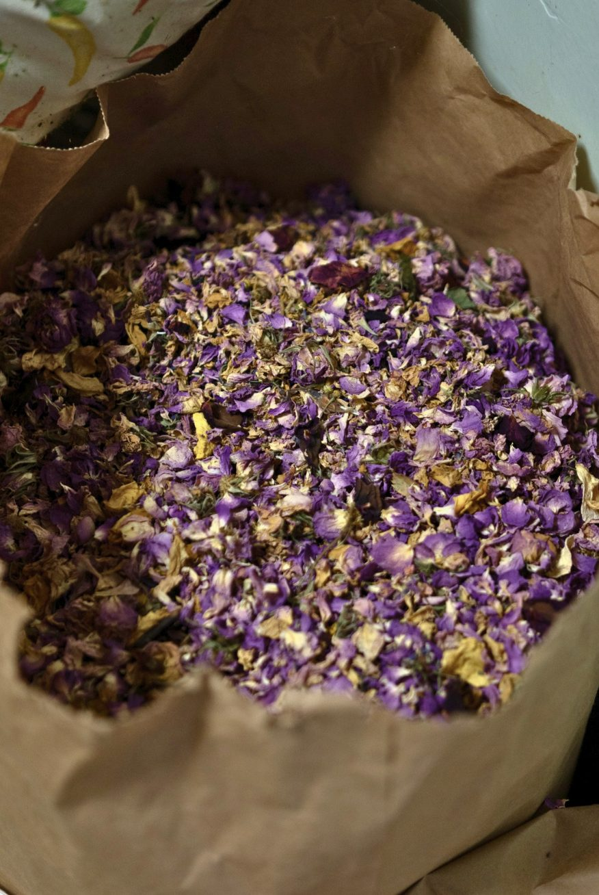
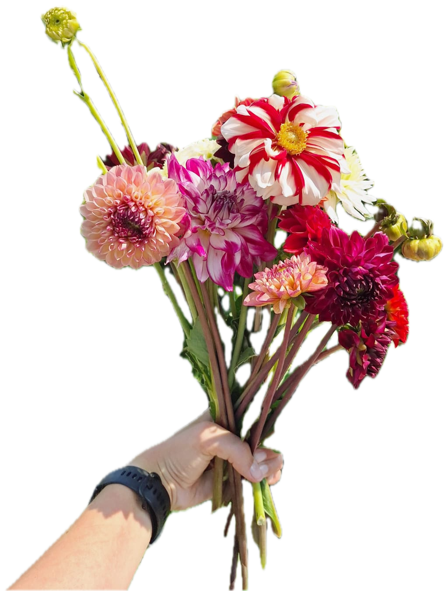
Dal campo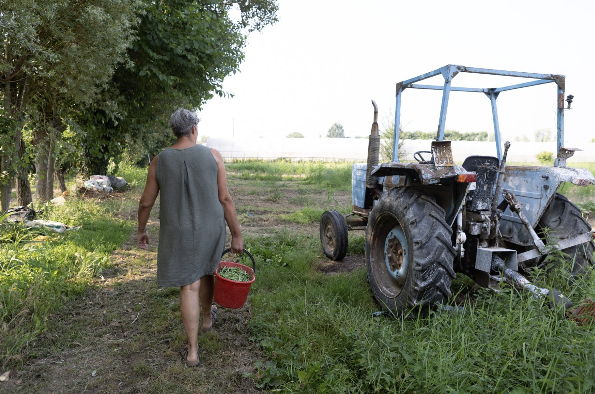
Quello che facciamo
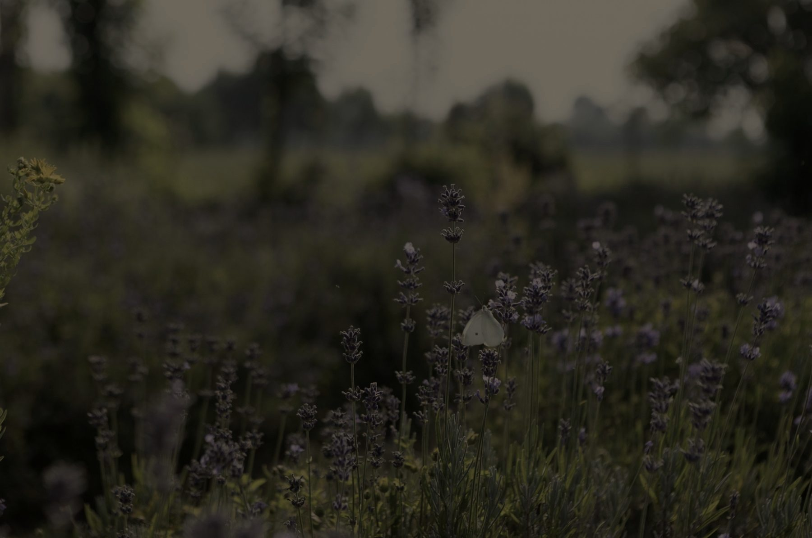
Nel campo, da giugno a ottobre.
E poi ve lo racconto, guardandovi negli occhi.
Massimo e Maria hanno tenuto le api per più di vent'anni. Nel 2006 sono diventata erborista e li ho convinti a provare una cosa nuova: convertire tutto al biologico e cominciare a seminare officinali. Da lì sono arrivate le tisane, poi la bottega, poi l'orto e il campo dei fiori.
Lavoriamo anche con chi ha bisogno di un posto dove ricominciare: è la parte di cui vado più fiera, e la facciamo sottovoce. Siamo ancora noi tre, sulla stessa terra, con lo stesso trattore vecchio.
Emanuela
Restiamo in contatto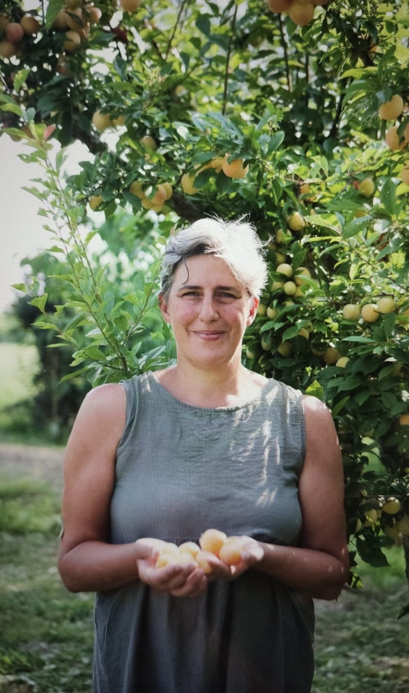
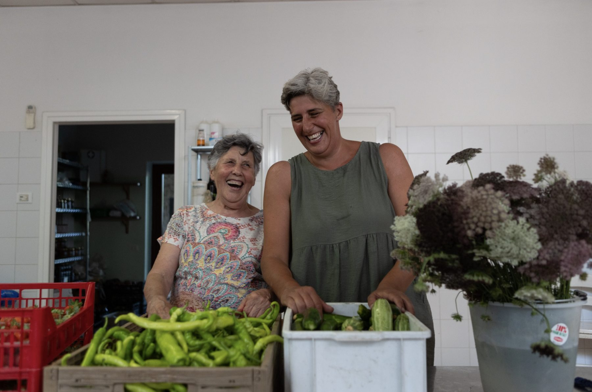
Annunciamo ogni cosa con qualche settimana di anticipo a chi ci ha lasciato un recapito.
24 giugno
La sera prima si raccolgono le erbe e si mettono in acqua sotto le stelle. La mattina dopo ci si lava con la rugiada. Si sta insieme, si spiega cosa va nel mazzo e perché.
Luglio – Settembre
Si entra tra i filari con le forbici e il secchio e ci si fa il mazzo da sé: dalie, zinnie, girasoli, ammi. Si paga a stelo.
Estate
Cena semplice all'aperto, giro nei campi al tramonto e assaggio di tisane fredde. Posti pochi, si prenota.
Autunno
Si guarda dentro l'essiccatoio, si compone la propria miscela, si porta a casa il sacchetto con l'etichetta scritta a mano.
Le date degli eventi, l'apertura della raccolta fiori, le tisane nuove di stagione. Scriviamo poco e solo quando c'è davvero qualcosa.
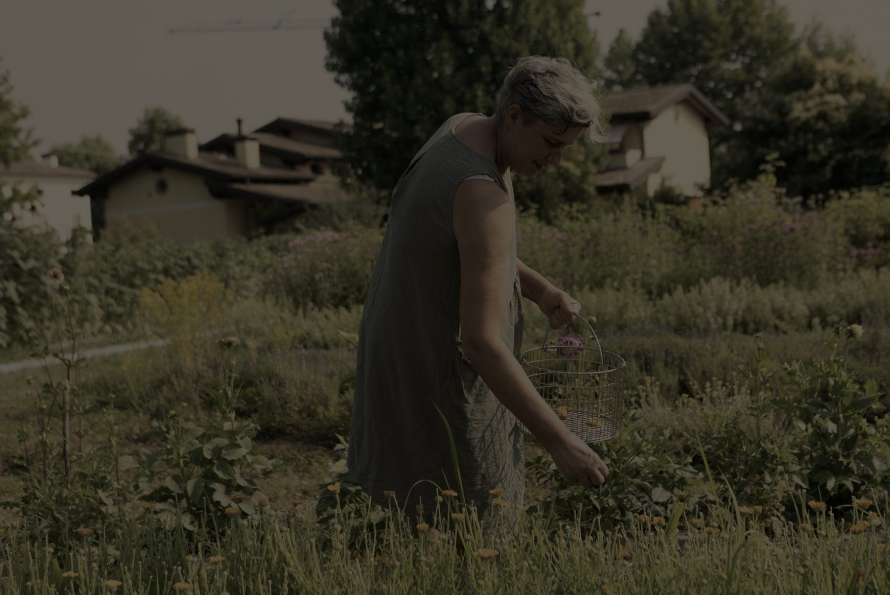
Tisane ed erbe sfuse, miele, conserve, farine, frutta e verdura del giorno, fiori in stagione. Si entra anche solo per il profumo, non ci offendiamo.
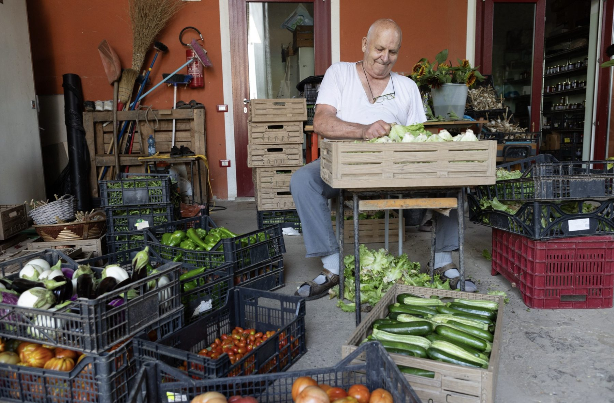
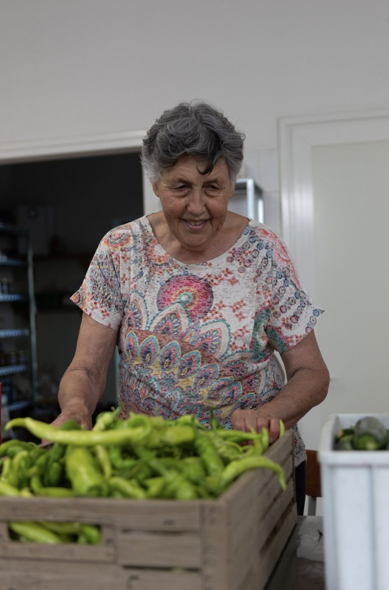
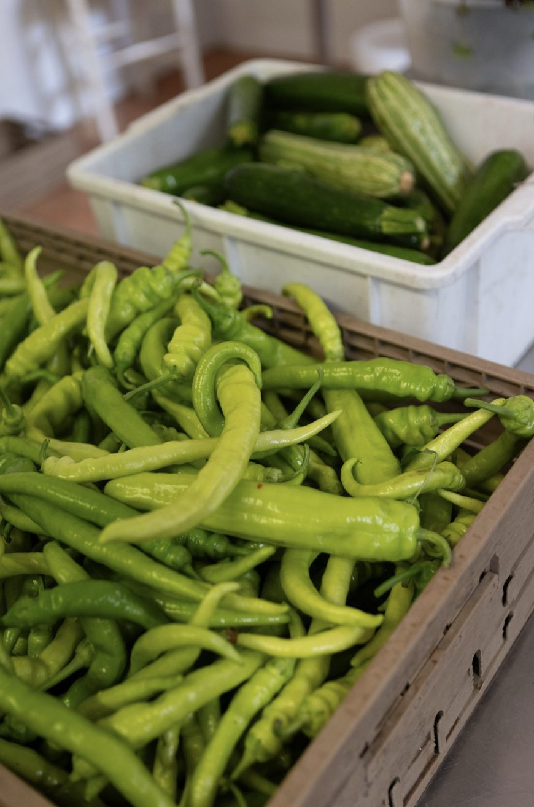
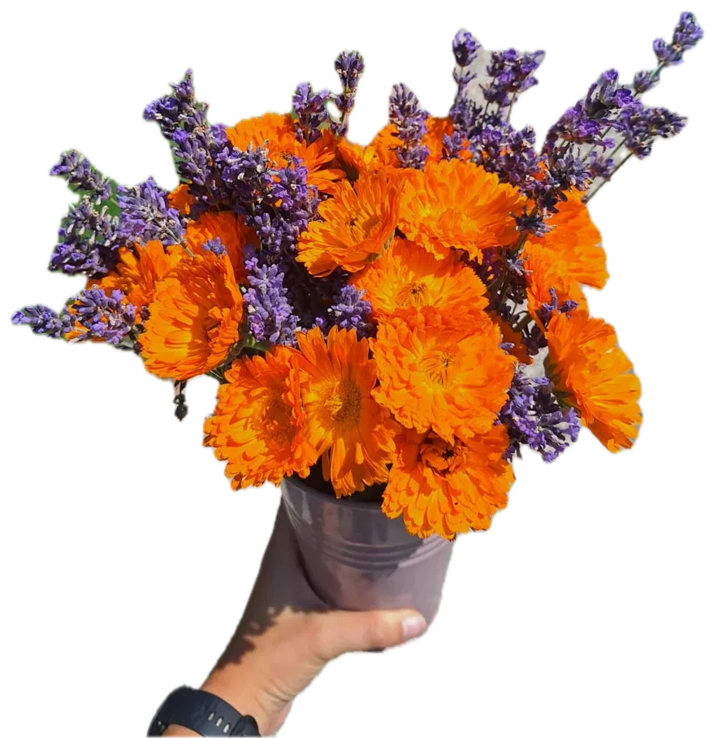
Il banco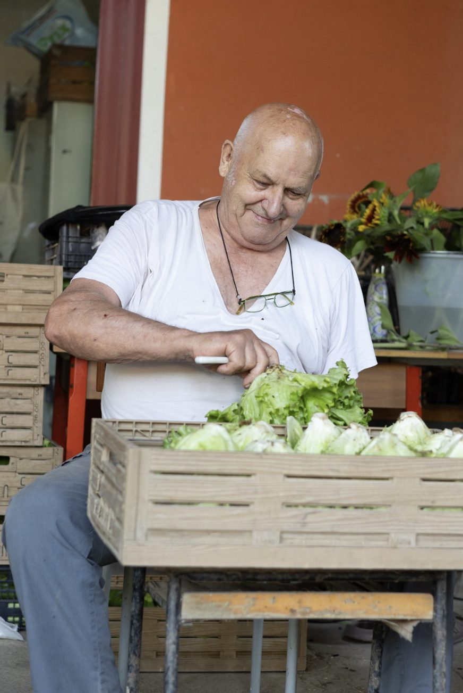